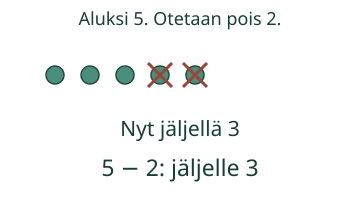
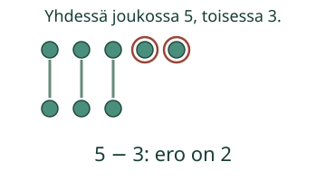

Pois otettu määrä tai määrien ero

Loikan lautasella on 5 marjaa. Hän syö niistä 2. Ota marjat pois yksi kerrallaan.
Miksi tähän tulee miinus?
Miinusmerkki − voi kertoa, että osa otetaan pois. Kirjoita ensin alkuperäinen määrä ja sitten pois otettu määrä.

Miinus kertoo myös eron
Yhdessä joukossa on 5 merkkiä ja toisessa 3. Valitse mallista Verrataan kahta joukkoa. Yhdistä yksi merkki kummastakin pariksi.

Vertailussa aloitat suuremmasta määrästä. 5 − 3 ja 3 − 5 eivät ole sama lasku. Lukujen vaihtaminen ei tässä toimi kuten plussassa.
Entä kaksi yhtä suurta joukkoa?
Kolme nappia ja kolme nappia. Kun teet pareja, jokaiselle löytyy pari. Ero on 0: 3 − 3. Vertailussa mitään ei poisteta.
Lopuksi: Miten miinus voi kertoa jotakin, vaikka mitään ei oteta pois?
Opettajalle ja ilman ruutua
Luokat 1–2. Tavoite: yhdistää miinusmerkki poistamiseen ja määrien eroon. Pakollinen esitieto on M-NUM-03. M-SUB-01 ja M-ARITH-01 eivät ole uusia portteja: merkitykset opetetaan pienin kuvatuin määrin.
Ota viidestä napista kaksi pois. Vertaa sen jälkeen viiden ja kolmen napin muuttumattomia rivejä pareittain. Kysy, mitä luvut 5 ja 3 kertovat jälkimmäisessä tilanteessa. Aikuinen voi lukea ohjeet; vastauksen voi osoittaa tai kirjoittaa ilman puhepakkoa.
Rastit ovat poistamisen malli. Paritus on vertailun malli. Tarkistus koskee kuvatun tilanteen esittämistä miinuslaskulla, ei fyysistä poistamista, itsenäistä laskusujuvuutta, muistamista tai formaalia hallintaa. Malli ja vihje ovat apua. Ei henkilöhistoriaa. Pelisilta varmistetaan erikseen verkon kuoressa.